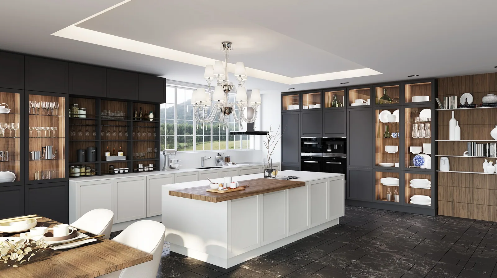
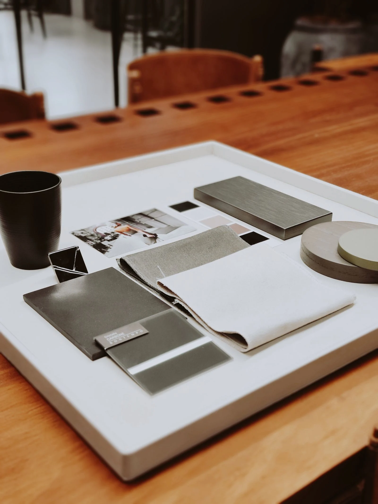
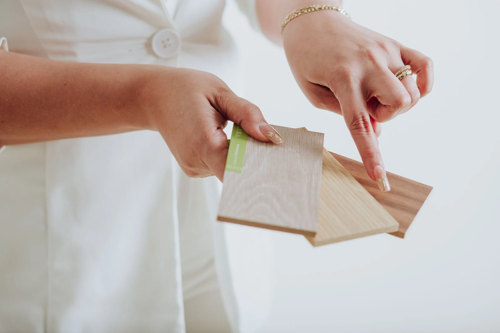

Две комнаты могут быть оформлены в одинаковых бежевых оттенках и производить совершенно разное впечатление. В одной взгляд скользит по ровным поверхностям. В другой задерживается на рисунке дерева, мягкой ткани кресла, тонком металлическом профиле и прожилках камня.
Разница возникает не обязательно из-за количества предметов или их стоимости. Часто её создаёт работа с фактурами — тем, как поверхности выглядят, отражают свет и ощущаются при прикосновении.
Для спокойного интерьера это особенно важно. Когда ярких акцентов немного, именно материалы придают пространству глубину.

От эффектного предмета к ощущению дома
В обзоре Миланской недели дизайна 2026 компания GRASS описывает направление Grounded Comfort: более естественные цвета, мягкие формы, матовые и тактильные поверхности. Речь идёт о наблюдениях выставочной команды, а не о единственном стиле, которому теперь должны следовать все интерьеры.
Но за этим наблюдением стоит интересный вопрос: что делает пространство привлекательным после первого впечатления?
Выразительный светильник или скульптурный стол способны сразу привлечь внимание. Однако каждый день мы соприкасаемся с другими деталями: берёмся за ручку, открываем ящик, садимся за стол, проводим рукой по подлокотнику. Эти ощущения становятся частью отношения к дому.
Поэтому роскошь можно рассматривать и через качество повседневного пользования. Красивое покрытие, приятная поверхность и точное движение механизма поддерживают друг друга.
Материалам нужны разные роли
Сложность возникает, когда каждый выбранный образец претендует на главную роль. Активный рисунок столешницы, рельефные фасады, выразительный пол и блестящие металлические детали могут нравиться по отдельности, но спорить в одной комнате.
Полезнее начать с одного материала, который определит характер композиции.
Если это камень с крупными прожилками, фасады могут стать спокойным фоном. Если главным акцентом выбрано дерево с заметным рисунком, соседние поверхности стоит оценивать с учётом его оттенка и ритма.
Представим кухню со светлыми гладкими фасадами, деревянными высокими секциями и столешницей с мягким рисунком. Здесь дерево может связать кухню с обеденным столом, а столешница — объединить рабочую поверхность и стеновую панель. Для цельного впечатления не обязательно добавлять ещё несколько декоративных отделок.
Это возможный принцип построения композиции, а не универсальная формула. Пропорции материалов зависят от площади, освещения и того, что уже присутствует в комнате.
Один цвет — несколько ощущений
Даже близкие оттенки позволяют создать выразительный интерьер, если поверхности различаются.
Матовая плоскость фасада, полупрозрачное стекло витрины и ткань с заметным переплетением воспринимаются по-разному. Они дают глазу достаточно деталей, сохраняя спокойную палитру.
Такой подход удобен для кухни-гостиной. Материалы могут поддерживать друг друга между зонами: древесный оттенок — повторяться в мебели, металл — в нескольких деталях, цвет камня — находить продолжение в текстиле.
При этом буквальное совпадение необязательно. Важнее проверить, как поверхности выглядят рядом и нет ли случайного оттенка, который нарушает общую композицию.

Свет раскрывает фактуру
Образец под салонным освещением не даёт полного представления о материале. Боковой свет способен подчеркнуть рельеф, а отражение окна — сделать глянцевую поверхность заметнее, чем ожидалось.
Поэтому подбор стоит продолжить за пределами стенда. Разложите основные образцы вместе, посмотрите на них при дневном свете и вечером. Вертикальный фасад полезно оценивать вертикально, а столешницу — горизонтально: так условия будут ближе к будущему интерьеру.
Особенно внимательно следует проверять крупные поверхности. Небольшой фрагмент рельефа может выглядеть деликатно, а тот же рисунок на нескольких высоких секциях — стать главным акцентом комнаты.

Красота должна соответствовать привычкам
Выразительная фактура не освобождает от вопросов об эксплуатации. Удобно ли очищать поверхность возле варочной панели? Насколько заметны следы касаний? Какой уход требуется выбранному покрытию?
Ответы относятся к конкретному материалу и его обработке. По внешнему виду нельзя достоверно определить ни устойчивость к пятнам, ни ремонтопригодность.
Именно поэтому материалы стоит обсуждать одновременно с образом жизни. Кухня для ежедневной готовки и кухня, которой пользуются время от времени, могут требовать разного баланса между декоративностью и простотой ухода.
В «Марли Лимарт» можно начать с небольшой подборки: фасад, столешница, дерево, металл и текстиль соседней зоны. Рассмотреть их вместе, определить главный акцент и убрать сочетания, которые спорят между собой.
Так появляется интерьер, которому не требуется постоянное добавление декора. Его выразительность уже заложена в пропорциях, свете и поверхностях, с которыми приятно жить.
Вернуться в блог